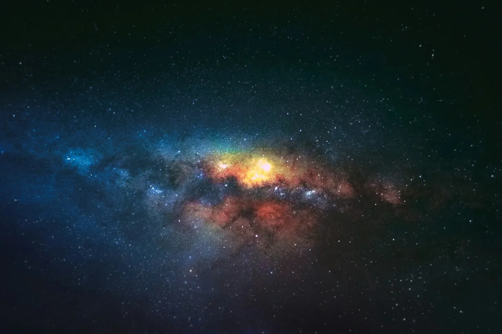

거미줄보다 가는 은빛 끈이 팽팽하게 뻗어 그들의 꽉 잡은 손 사이를 이었다. 끈은 얼음처럼 차가운 파란색에서 심장이 멎을 듯한 붉은색으로 움직이는 빛을 발하며 고동쳤다. 레나는 마테오의 손을 더 세게 움켜쥐었고, 그녀의 손가락 마디는 뼈가 드러날 정도로 하얘졌다.
“원래 이런 거 맞지?” 그녀의 목소리는 거의 속삭임에 불과했고, 허공의 메아리치는 침묵 속에서 묻혔다. 그들 주위로는 은하들이 우주 캔버스에 그려진 생생한 물감처럼 소용돌이쳤다. 별 하나하나가 불꽃을 일으키는 핀처럼 박혀 있었고, 성운은 색과 빛의 걸작이었다. 하지만 레나의 눈에 보이는 것은 미친 듯이 뛰는 심장처럼 고동치는 생명줄, 그 끈뿐이었다.
얼굴은 창백했지만 침착함을 유지한 마테오는 그녀에게 안심시키듯 고개를 끄덕였다. “네비게이터가 에너지 변동일 뿐이라고 했어. 과정의 일부라고.” 그의 목소리는 약간 흔들리며 침착한 표정 뒤에 숨겨진 불안감을 드러냈다.
그들은 수십억 명 중에서 이 영광스럽고도 무거운 짐을 짊어질 자격을 얻었다. 금속 상자 안이 아니라 시공간 그 자체의 날것의 구조를 통해 우주를 횡단하는 최초의 인류가 된 것이다. 잊혀진 기술의 경이인 양자 끈은 그들의 선체이자 밧줄이었다.
선발 과정은 육체적, 정신적으로 한계에 부딪히는 고된 과정이었다. 물론 그들은 뛰어난 성과를 거두었다. 그들은 인류가 내세울 수 있는 최고의 존재들이었다. 하지만 미지의 세계의 벼랑 끝에 서서 무한함을 마주한 레나는 두려움만 느꼈다.
The silver cord, thinner than a spider’s silk, stretched taut between their clasped hands. It pulsed with a light that shifted from icy blue to a heart-stopping red. Lena gripped Mateo’s hand tighter, her knuckles bone white.
“It’s supposed to do that, right?” Her voice was barely a whisper, lost in the echoing silence of the void. Around them, galaxies swirled like vibrant paint on a cosmic canvas. Each star was a pinprick of fire, each nebula a masterpiece of color and light. Yet, all Lena could see was the cord, her lifeline, pulsing like a frantic heartbeat.
Mateo, his face pale but composed, gave her a reassuring nod. “The Navigator said it was just energy fluctuations. Part of the process.” His voice wavered slightly, betraying his calm façade.
They had been chosen, out of billions, for this honor, this burden. The first humans to traverse the universe, not in metal boxes, but through the raw fabric of spacetime itself. The Quantum Cord, a marvel of forgotten technology, was their vessel, their tether.
The selection process had been grueling – physical and psychological tests that pushed them to their limits. They had excelled, of course. They were the best humanity had to offer. Yet, standing on the precipice of the unknown, staring into the infinite, all Lena felt was fear.
여행은 미묘하게 시작되었다. 마치 비단실이 앞으로 끌어당기는 듯한 부드러운 떨림이었다. 그러더니 우주는 만화경 같은 감각의 대폭발을 일으켰다. 별들은 쏜살같이 지나가며 그 뒤로 불의 흔적을 남겼다. 그들은 성운, 즉 방대한 별의 먼지 구름을 뚫고 나아갔고, 그들의 피부에는 반짝이는 색조가 칠해졌다. 블랙홀이 포효하며 스쳐 지나갔고, 그들의 중력은 그들을 갈기갈기 찢어놓으려는 위협적인 힘을 발휘했다.
그 모든 과정을 통틀어 끈은 그들을 붙잡고 있었다. 그들이 아는 현실에 대한 그들의 닻이자 유일한 연결 고리였다.
그들은 순수한 다이아몬드로 조각된 행성에 착륙했고, 그 표면은 천 개의 태양의 빛을 반사했다. 그들은 액체 메탄 바다에서 수영했고, 생체 발광 피부를 가진 외계 생물들이 그들을 스쳐 지나갔다. 그들은 소용돌이치는 보라색 구름으로 뒤덮인 하늘 아래 붉은 모래 위를 걸었고, 계피와 두려움의 향기가 가득한 공기를 마셨다.
경험 하나하나가 이전보다 더 숨 막히고 더 무서웠다. 그리고 시간이 흐를수록 처음의 공포는 경외감으로, 존재의 거대한 태피스트리에서 자신의 위치에 대한 깊은 이해로 바뀌었다. 그들은 하찮은 존재였고, 그러한 광대함 앞에 놓인 한 점 티끌에 불과했지만, 그들은 그것의 일부였고, 그들이 이제 막 이해하기 시작한 방식으로 그것과 연결되어 있었다.
그러던 중 죽어가는 별을 공전하는 이름 없는 행성에서 끈이 깜빡였다.
미묘한 일이었다. 빛이 희미해지고 긴장이 약간 느슨해졌다. 하지만 레나는 느꼈다. 원초적인 두려움이 그녀를 관통했고, 속이 메스꺼워졌다.
“마테오.” 그녀는 공황 상태에 빠져 숨가쁘게 말했다.
그도 그것을 보았다. 떠오르는 공포로 가득 찬 그의 눈이 그녀의 눈과 마주쳤다. 끈은 이제 불규칙적으로 고동쳤고, 빛은 병든 듯한 노란색과 오싹한 검은색 사이를 오갔다.
The journey began subtly. A gentle tug, like a silken thread pulling them forward. Then, the universe exploded in a kaleidoscope of sensations. Stars streaked past, leaving trails of fire in their wake. They hurtled through nebulas, vast clouds of stardust painting their skin in shimmering hues. Black holes roared past, their gravitational pull a tangible force threatening to rip them apart.
Through it all, the cord held. It was their anchor, their only connection to reality as they knew it.
They landed on planets sculpted from pure diamond, their surfaces reflecting the light of a thousand suns. They swam in oceans of liquid methane, alien creatures with bioluminescent skin gliding past them. They walked on red sands beneath a sky of swirling purple clouds, breathing air thick with the scent of cinnamon and fear.
Each experience was more breathtaking, more terrifying than the last. And with each passing moment, the initial terror gave way to awe, to a profound understanding of their place in the grand tapestry of existence. They were insignificant, mere specks of dust in the face of such immensity, and yet, they were part of it, connected to it in ways they were only beginning to comprehend.
Then, on a nameless planet, orbiting a dying star, the cord flickered.
It was a subtle thing, a dimming of the light, a slight slackening of the tension. But Lena felt it. A jolt of primal fear shot through her, a sickening feeling in the pit of her stomach.
“Mateo,” she gasped, her voice tight with panic.
He saw it too. His eyes, wide with dawning horror, met hers. The cord pulsed erratically now, the light shifting between a sickly yellow and a chilling black.
그들은 눈앞에서 풀려나가는 실 같은 끈에 의지한 채 표류하고 있었다.
한때 경이로움과 장엄함의 원천이었던 우주는 이제 위협적인 심연으로 변해 있었다. 한때 친근한 등대 같았던 별들은 이제 차갑고 무관심한 눈으로 그들의 곤경을 지켜보는 것 같았다.
“뭔가 조치를 취해야 해.” 레나의 목소리가 갈라졌다.
마테오는 우주복을 뒤져 통신 장치를 꺼냈다. 그것이 그들의 유일한 희망이었고, 놀랍고도 불가능한 여정에 그들을 보낸 지구상의 과학자들과의 유일한 연결 고리였다.
“응답 바랍니다, 지구! 여기는 코드 원. 상황이 발생했습니다, 들리십니까?” 그의 목소리는 침착하고 통제되었지만, 레나는 그의 이마에 땀방울이 맺히는 것을 볼 수 있었다.
아무런 응답이 없었다. 침묵뿐이었다.
그는 목소리에 절망감을 담아 다시 한번 시도했다. “지구, 여기는 코드 원. 끈이 끊어지고 있습니다, 응답 바랍니다!”
유일한 반응은 잔혹하게 그들의 필사적인 요청을 조롱하는 듯한 치직거리는 잡음뿐이었다.
레나는 눈을 감고 마테오의 손을 폭풍우가 몰아치는 바다에서 구명뗏목에 매달리는 사람처럼 온 힘을 다해 움켜쥐었다. 그녀는 끈이 닳아 없어지고 실이 하나씩 끊어지는 것을 느낄 수 있었다. 곧 끈은 사라지고 그들은 길을 잃게 될 것이다.
광활하고 냉혹한 우주의 공간 속에서. 홀로.
They were adrift, tethered to their reality by a thread that was unraveling before their eyes.
The universe, once a source of wonder and awe, became a menacing abyss. The stars, once friendly beacons, now seemed like cold, indifferent eyes watching their plight.
“We have to do something,” Lena’s voice cracked.
Mateo fumbled in his suit, pulling out the communication device. It was their only hope, their only link to the scientists on Earth who had sent them on this incredible, impossible journey.
“Come in, Earth! This is Cord One. We have a situation, do you copy?” His voice was calm, controlled, but Lena could see the beads of sweat forming on his brow.
Static. Silence.
He tried again, his voice rising in desperation. “Earth, this is Cord One. The cord is failing, do you copy?”
The only response was the hiss of static, a cruel mockery of their desperate pleas.
Lena closed her eyes, her hand clutching Mateo’s with the strength of someone clinging to a life raft in a raging sea. She could feel the cord fraying, the threads snapping one by one. Soon, it would be gone, and they would be lost.
Lost in the vast, unforgiving expanse of the universe. Alone.
시간은 모든 의미를 잃었다. 그들을 묶고 있는 깜빡이는 끈만큼이나 희박한 희망을 품고 그들이 함께 웅크리고 있는 동안, 몇 분은 영겁처럼 느껴지는 시간으로 늘어났다. 불길한 검은색이 섞인 병든 듯한 노란색으로 맥박치는 빛은 볼 때마다 새로운 절망의 파도를 그들에게 몰아쳤다.
“한 번만 더.” 마테오의 목소리는 갈라졌고, 그의 얼굴에는 필사적인 결의가 새겨졌다. 그는 통신 장치의 주파수를 조절했고, 그의 움직임은 불안하고 거의 미친 듯했다. “이게 마지막 기회야, 레나. 마지막 남은 힘으로…”
레나는 고개를 끄덕였을 뿐, 목이 메어 말을 할 수 없었다. 우주가 그들을 짓누르는 듯하고 지구의 침묵은 귀청이 터질 듯한 굉음으로 들리는 와중에도, 그녀는 그의 손을 꼭 잡고 그의 손길에서 힘을 얻었다.
그때, 목소리가 들렸다. 익숙한 인간의 말소리가 아니라, 얼음 조각처럼 차갑고 날카로운 딸깍하는 소리와 휘파람 소리였다. 통신 장치에서 흘러나오는 소리에 그들의 등골이 오싹해졌다.
마테오의 눈이 커졌고, 필사적인 희망의 빛은 곧 떠오르는 공포에 의해 사라졌다. “지구가 아니야…”
목소리가 다시 들렸고, 이번에는 더 가까웠으며, 그들의 뼛속까지 진동하는 듯한 낮은 윙윙거리는 소리가 함께 들렸다. 그들의 생명줄인 끈이 느슨해졌고, 빛은 마치 죽어가는 불씨 같았다. 윙윙거리는 소리는 더욱 강해졌고, 그들 주변의 공간은 마치 끊어질 듯 팽팽하게 늘어난 천처럼 일렁였다.
Time lost all meaning. Minutes stretched into what felt like eons as they huddled together, their hope as tenuous as the flickering cord that bound them. Each pulse of light, now a sickly yellow tinged with an ominous black, sent a fresh wave of despair crashing over them.
“One more time.” Mateo’s voice was hoarse, his face etched with a desperate resolve. He adjusted the frequency on the communication device, his movements jerky, almost frantic. “This is our last chance, Lena. The last bit of power…”
Lena merely nodded, her throat too tight to speak. She clung to his hand, drawing strength from his touch, even as the universe seemed to press in on them, the silence from Earth a deafening roar.
And then, a voice. Not the familiar crackle of human speech, but a series of guttural clicks and whistles, cold and sharp as shattered ice. It slithered from the communication device, sending shivers down their spines.
Mateo’s eyes widened, a flicker of desperate hope quickly extinguished by dawning horror. “It’s not Earth…”
The voice spoke again, closer this time, accompanied by a low humming that seemed to vibrate in their very bones. The cord, their lifeline, grew slack, its light a dying ember. The hum intensified, and the space around them rippled, like fabric stretched to its breaking point.
일렁이는 공기 속에서 하나의 형체가 그들 앞에 모습을 드러내기 시작했다. 대략적으로 인간과 비슷한 형태였지만, 불가능할 정도로 길쭉했고, 몸에 비해 사지가 너무 길고 가늘었다. 병든 회색의 피부는 날카로운 뼈 위로 팽팽하게 뻗어 있어 살아있는 해골처럼 보였다.
동공이 없는 새까만 두 눈이 그들을 응시했다. 어떤 표정도, 어떤 분명한 감정도 읽을 수 없는 그 모습은 어떤 으르렁거림이나 고함보다 더 무서웠다. 이 생물은 죽음의 화신이었고, 그들은 그 먹잇감이었다.
그 생물은 불안정한 유동성을 가지고 움직이며 그들을 향해 미끄러지듯 다가왔다. 흑요석 발톱이 달린 기다란 손가락이 뻗어 나와 끈을 스쳤다. 엄청난 압력을 받는 금속과 같은 고음의 윙윙거리는 소리가 허공을 채웠고, 끈은 스파크를 일으키며 펑펑 소리를 내며 빛을 잃어갔다.
마지막 저항으로 마테오는 말로 표현할 수 없는 저항의 외침을 지르며 그 생물에게 달려들었다. 허리케인을 공격하는 날벌레처럼 무익한 행동이었다.
그 생물은 움찔하지도 않았다. 해골 같은 손 하나가 생각보다 빠르게 튀어나와 마테오의 목을 감쌌다. 그는 비명을 지르지 않았고, 숨이 막히는 소리만 낼 뿐이었다. 그의 몸은 공중으로 들어올려졌고, 다리는 쓸모없이 허우적거렸다.
A shape began to coalesce in front of them, emerging from the rippling air. It was vaguely humanoid, but impossibly elongated, with limbs too long and thin for its body. Its skin, a sickly grey, stretched taut over sharp bones, giving it the appearance of a living skeleton.
Two eyes, black and devoid of pupils, fixed on them. The lack of expression, of any discernible emotion, was more terrifying than any snarl or growl. This creature was death incarnate, and they were its prey.
The creature moved with an unnerving fluidity, gliding towards them. Its long fingers, tipped with obsidian claws, reached out, brushing against the cord. A high-pitched whine, like metal under immense pressure, filled the void as the cord sparked and sputtered, the light dying.
Mateo, in a final act of defiance, threw himself at the creature, screaming wordless defiance. It was a futile gesture, a gnat attacking a hurricane.
The creature didn’t even flinch. One of its skeletal hands shot out, faster than thought, wrapping around Mateo’s throat. He didn’t scream, only made a choking sound as he was lifted off the ground, his legs flailing uselessly.
레나는 공포에 질려 꼼짝도 하지 못한 채 마테오의 눈에서 빛이 사라지는 것을 지켜보았다. 그 생물은 아무렇지 않게 손목을 움직여 마테오의 생명이 없는 몸을 옆으로 던졌다. 그는 그녀의 발치에 떨어졌고, 그의 눈은 심연을 멍하니 응시하며 그들의 공통된 운명을 증명하는 듯했다.
그 생물은 레나에게로 시선을 돌렸고, 오싹할 정도로 느린 미소가 얼굴에 퍼져 나갔다. 얇은 피부가 갈라질 듯 팽팽하게 늘어났다. 그것은 더 가까이 다가왔고, 부패한 냄새와 함께 고대적이고 매우 이질적인 무언가가 그녀에게 밀려왔다.
“네 본질… 흥미롭군.” 그것은 뼈에 사포를 가는 듯한 목소리로 낮게 말했다. “공허를 위한 새로운 맛이로군.”
그리고 나서 그 생물은 입을 벌렸고, 바늘처럼 날카로운 이빨이 드러났다. 각각의 이빨은 레나의 손가락보다 길었다.
어둠이 그녀를 삼키는 순간, 그녀는 적어도 별들이 우주의 공포에 무관심한 증인으로 남아 있다는 사실에서 이상한 위안을 찾았다. 아름답고, 멀리 있고, 우주의 바다에 떠 있는 두 영혼의 운명에는 전혀 관심이 없는.
Lena watched, paralyzed with terror, as the light in Mateo’s eyes faded. The creature, with a casual flick of its wrist, tossed Mateo’s lifeless body aside. He landed at her feet, eyes staring vacantly into the abyss, a testament to their shared fate.
The creature turned its gaze to Lena, and a slow, chilling smile spread across its face, stretching the thin skin until it seemed ready to split. It leaned closer, the stench of decay and something else, something ancient and profoundly alien, washing over her.
“Your essence…intriguing,” it rasped, the voice like sandpaper grinding against bone. “A new flavor for the void.”
Then, the creature opened its mouth, revealing rows of needle-sharp teeth, each one longer than Lena’s finger.
As darkness consumed her, she found a strange comfort in the fact that the stars, at least, remained indifferent witnesses to the horrors of the universe. Beautiful, distant, and utterly unconcerned with the fate of two souls adrift in the cosmic sea.